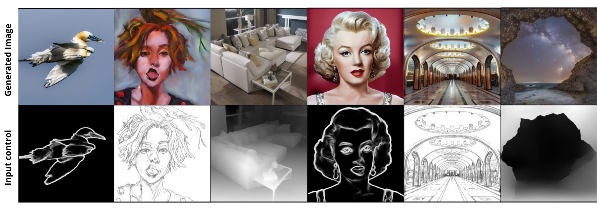
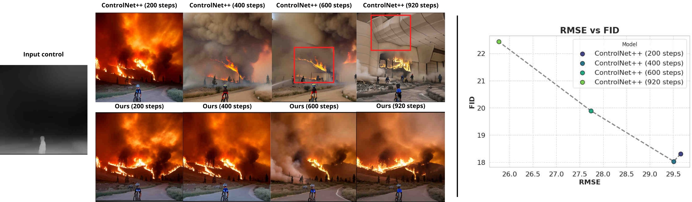
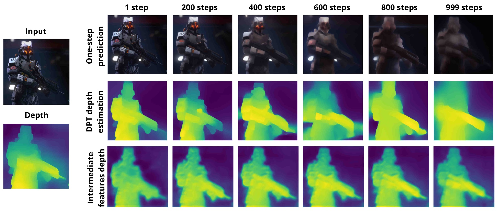
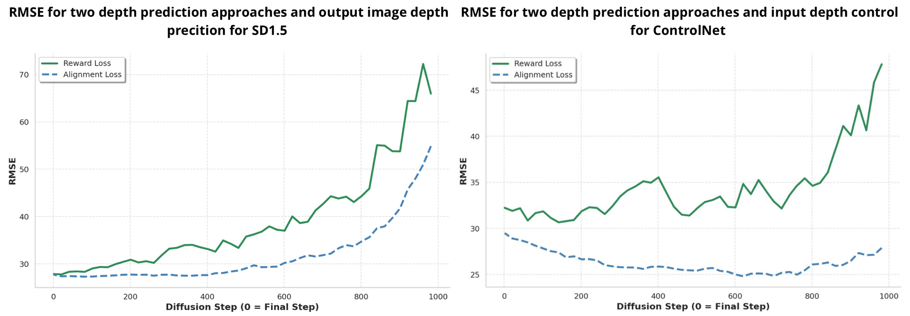
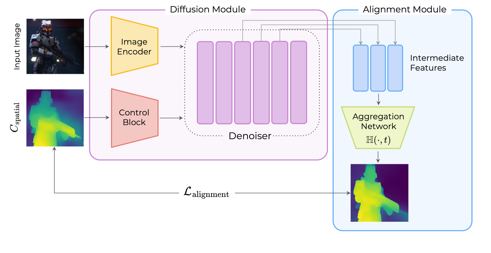
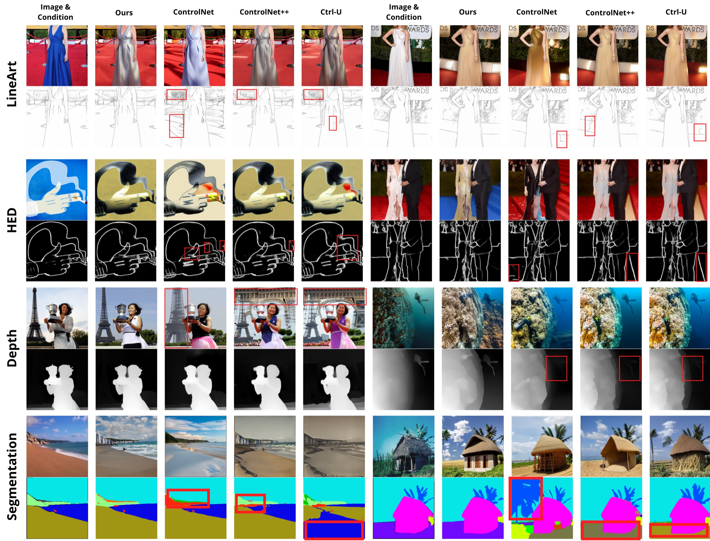
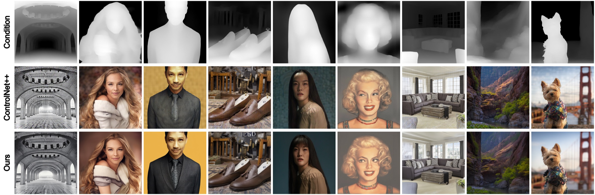
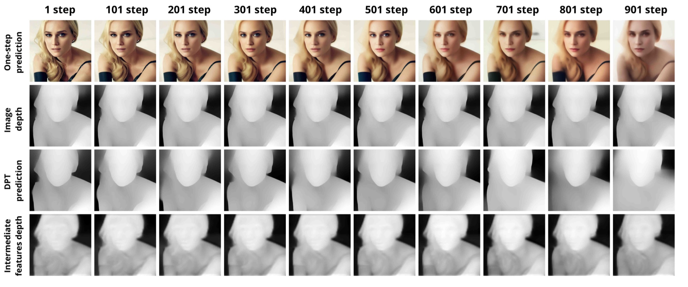
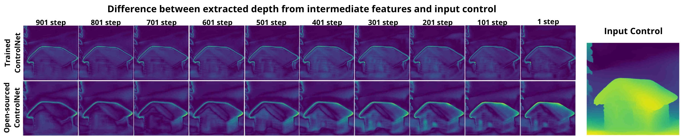
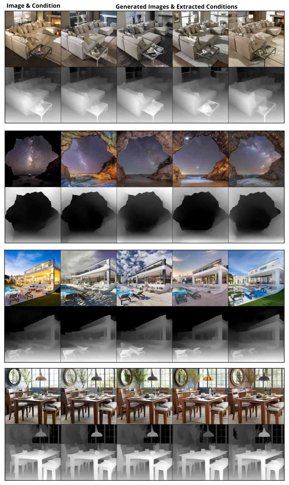

Despite significant progress in text-to-image diffusion models, achieving precise spatial control over generated outputs remains challenging. One of the popular approaches for this task is ControlNet, which introduces an auxiliary conditioning module into the architecture. To improve alignment of the generation image and control, ControlNet++ proposes a cycle consistency loss to refine correspondence between controls and outputs, but restricts its application to the final denoising steps, while the main structure is introduced at an early stage of generation. To address this issue, we suggest InnerControl — a training strategy that enforces spatial consistency across all diffusion steps. Specifically, we train lightweight control prediction probes — small convolutional networks — to reconstruct input control signals (e.g., edges, depth) from intermediate diffusion features at every denoising step. We prove the efficiency of such models to extract signals even from very noisy latents and utilize these models to generate pseudo ground truth controls during training. Suggested approach enables alignment loss that minimizes the difference between predicted and target condition throughout the whole diffusion process. Our experiments demonstrate that our method improves control alignment and fidelity of generation. Our approach can be applied to both UNet- and Transformer-based diffusion architectures and be integrated with established training techniques (e.g., ControlNet++) to achieve high performance across different condition methods such as edge, segmentation and depth conditions.
ControlNet++ computes its reward on a one-step prediction of the clean image. Moving the reward loss to earlier, noisier steps lowers RMSE but costs image quality: up to 400 steps the images stay clean, at 600 steps small artifacts appear, and at 920 steps the model produces strong distortions such as unexpected lines and irregular edges.

The reason is the input to the reward model. From roughly step 400 onward, one-step predictions become blurry and fall outside the domain of a pretrained depth estimator such as DPT. A probe on intermediate features keeps predicting a coherent depth map even at the noisiest steps.



A lightweight, timestep-conditioned probe \(\mathbb{H}(\cdot, t)\) aggregates intermediate denoiser features (UNet decoder features, or normalization-modulated Transformer block features for SD3.5 and FLUX) with bottleneck layers and a learned weighted sum, and predicts the spatial control. Its prediction \(H_t = \mathbb{H}(\mathrm{ControlNet}(c_{\text{spatial}}, c_{\text{txt}}, x_t, t), t)\) is compared with the input control:
\[ \mathcal{L}_{\text{alignment}} = \mathcal{L}\left(c_{\text{spatial}},\, H_t\right) \]We use MSE for depth and edges and cross-entropy for segmentation. The final objective combines the diffusion loss, the ControlNet++ reward loss on the late steps and the alignment loss on a wide step range:
\[ \mathcal{L}_{\text{training}} = \mathcal{L}_{\text{diffusion}} + \alpha \cdot \mathcal{L}_{\text{reward}} + \beta \cdot \mathcal{L}_{\text{alignment}} \]The alignment loss is applied over timesteps [0, 920] for depth, [0, 800] for HED, [0, 700] for LineArt and [450, 980] for segmentation on UNet backbones, and over [400, 920] for SD3.5 and FLUX.
| Method | T2I model | HED | LineArt | Depth | Segmentation | ||||
|---|---|---|---|---|---|---|---|---|---|
| SSIM ↑ | FID ↓ | SSIM ↑ | FID ↓ | RMSE ↓ | FID ↓ | mIoU ↑ | FID ↓ | ||
| ControlNet | SDXL | — | — | — | — | 40.00 | — | — | — |
| T2I-Adapter | SDXL | — | — | 0.639 | — | 39.75 | — | — | — |
| T2I-Adapter | SD1.5 | — | — | — | — | 48.40 | 22.52 | — | — |
| Gligen | SD1.4 | 0.563 | — | — | — | 38.83 | 18.36 | — | — |
| Uni-ControlNet | SD1.5 | 0.691 | 17.1 | — | — | 40.65 | 20.27 | — | — |
| UniControl | SD1.5 | 0.797 | 16.0 | — | — | 39.18 | 18.66 | — | — |
| ControlNet | SD1.5 | 0.762 | 15.4 | 0.705 | 17.4 | 35.90 | 17.76 | 32.60 | 41.1 |
| ControlNet++ | SD1.5 | 0.822 | 13.0 | 0.840 | 13.2 | 27.63 | 18.59 | 38.08 | 39.04 |
| Ctrl-U | SD1.5 | 0.820 | 13.2 | 0.810 | 12.5 | 26.50 | 18.67 | 36.95 | 35.00 |
| InnerControl (ours) | SD1.5 | 0.826 | 13.0 | 0.850 | 13.5 | 26.09 | 18.29 | 40.22 | 37.65 |
HED, LineArt and depth on MultiGen-20M, segmentation on ADE20K; guidance scale 7.5. Bold: best, underline: second best.

| Method | Model | Guidance | RMSE ↓ | FID ↓ |
|---|---|---|---|---|
| ControlNet++ | SDXL | 7.5 | 30.24 | 17.00 |
| InnerControl (ours) | SDXL | 7.5 | 28.31 | 17.10 |
| ControlNet++ | SD3.5 | 4.5 | 31.07 | 14.24 |
| InnerControl (ours) | SD3.5 | 4.5 | 30.31 | 14.34 |
| ControlNet++ | FLUX.1 | 4.5 | 29.22 | 23.61 |
| InnerControl (ours) | FLUX.1 | 4.5 | 27.91 | 22.54 |
The probe and loss are unchanged across backbones; for Transformers the probe reads a compact subset of post-normalization features.

| Method | RMSE ↓ | FID ↓ | CLIP ↑ |
|---|---|---|---|
| FLUX.2 [klein] (9B) | 46.06 | 26.15 | 29.16 |
| UniPic2 (2B) | 65.02 | 28.92 | 28.41 |
| ControlNet++ (FLUX.1) | 29.22 | 23.61 | 29.22 |
| InnerControl (FLUX.1) | 27.91 | 22.54 | 28.88 |
Native I2I models receive the depth map as the reference image with the same prompt. They are far less faithful to the geometric condition, so an explicit control branch is still needed at this precision.
For each control type: one-step prediction, the control estimated from the generated image, the reward-model estimate on the one-step prediction, and the control predicted from intermediate features. At high noise levels the reward-model estimate on the blurry one-step prediction breaks down, while the feature probe still gives a usable signal.



@inproceedings{konovalova2027innercontrol,
title = {InnerControl: Aligning ControlNet with Internal Feature Feedback},
author = {Konovalova, Nina and Idrisov, Ibragim and Garifullin, Kamil and Sobornov, Timofei and Alanov, Aibek},
booktitle = {Proceedings of the IEEE/CVF Winter Conference on Applications of Computer Vision (WACV)},
year = {2027}
}